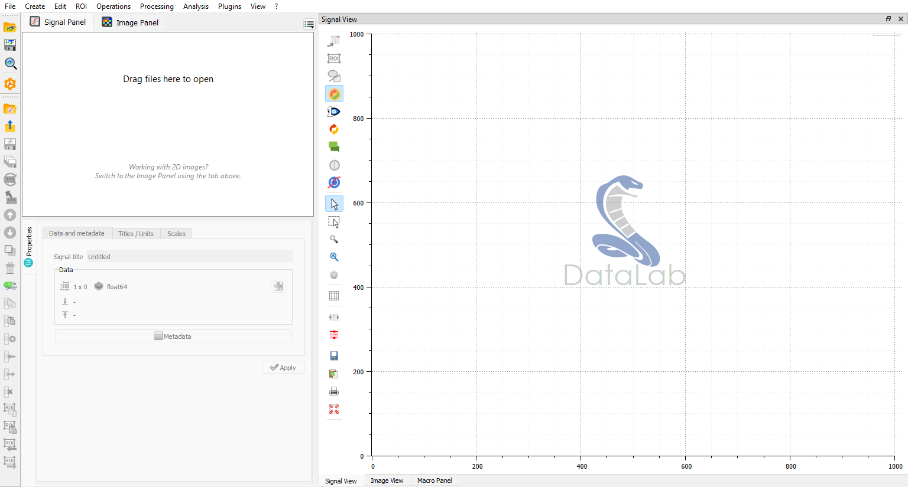

Overview#
Basic concepts#
Working with DataLab is very easy. The user interface is intuitive and self-explanatory. The main window is divided into two main areas:
The left area contains the Signals and Images data tabs, which list the data sets currently loaded in each panel. Clicking a tab switches the main window to the corresponding panel, as well as the menu and toolbar contents. Below the list of data sets, a Properties view shows information about the currently selected data set.
The right area shows the visualization of the currently selected data set. The visualization is updated automatically when the user selects a new data set in the list of data sets.

DataLab main window, at startup.#
Additional panels are available as dockable widgets, and may be shown or hidden from the “View” menu: the History Panel, the Macro panel (see Macros) and the AI Assistant.
Command palette#
Rather than navigating through nested menus, any command may be reached by typing part of its name or of its menu path in the command palette. It lists every command available for the currently active panel, identified by its localised menu path (e.g. “Processing › Fourier analysis › FFT”).
The palette may be opened in three ways:
with the Ctrl+Shift+P keyboard shortcut,
by clicking the search box in the top-right corner of the menu bar,
from the “Command palette…” entry at the top of the “?” (Help) menu.
Type a few characters to filter the list: the matching is fuzzy, so “fft” or “fan” both reach the “Fourier analysis” entries. Results are navigated with Up / Down and triggered with Enter, exactly as if the command had been selected in the menu bar. With an empty query, all commands are listed alphabetically by path.
History Panel#
The History Panel is an additional dockable panel that records signal
and image actions in a shared active session. It supports replay, step-by-step
replay, duplication, and compatibility diagnostics. Sessions may be saved in
standalone .dlhist files or with the workspace in HDF5 format.
Internal data model and workspace#
DataLab has its own internal data model, in which data sets are organized around
a tree structure. Each panel in the main window corresponds to a branch of the
tree. Each data set shown in the panels corresponds to a leaf of the tree. Inside
the data set, the data is organized in an object-oriented way, with a set of
attributes and methods. The data model is described in more detail in the
API section (see sigima.objects).
For each signal or image object, DataLab stores not only the data itself but
also a set of metadata describing the data and how it should be displayed. The
metadata is stored in a dictionary accessible through the object’s metadata
attribute (and may also be browsed in the Properties view, with the
Metadata button).
The DataLab Workspace is defined as the collection of all data sets which are currently loaded in DataLab, in both the Signals and Images panels.
Loading and saving the workspace#
The following actions are available to manage the workspace from the File menu:
Open HDF5 file: load a workspace from an HDF5 file.
Save to HDF5 file: save the current workspace to an HDF5 file.
Browse HDF5 file: open the HDF5 Browser to explore the content of an HDF5 file and import data sets into the workspace.
Note
Data sets may also be saved or loaded individually, using data formats such as .txt or .npy for 1D signals (see Open signal for the list of supported formats), or .tiff or .dcm for 2D images (see Open image for the list of supported formats).
Interactive object creation and processing#
DataLab provides an interactive workflow for creating objects and adjusting processing parameters, allowing you to fine-tune results without creating multiple objects.
Interactive object creation#
When creating a new signal or image object using the creation functions (e.g., Gaussian signal, 2D peak image, etc.), DataLab stores the creation parameters in the object’s metadata. This enables interactive parameter adjustment after creation:
Create a signal or image object from the Create menu
Select the created object in the list
A Creation tab appears in the Properties panel (bottom-left)
Modify any creation parameter (amplitude, frequency, size, etc.)
Click Apply to regenerate the object with new parameters
The object is updated in place, preserving any subsequent processing or analysis results. This is particularly useful for:
Exploring different parameter values without cluttering the workspace
Fine-tuning object characteristics while observing the results
Educational purposes to demonstrate parameter effects
Note
Interactive creation is only available for objects created with parameter classes (not for imported data from files).
Interactive 1-to-1 processing#
When applying a 1-to-1 processing operation that has configurable parameters (e.g., Gaussian filter, threshold, morphological operations), DataLab stores the processing metadata, enabling parameter adjustment and re-processing:
Apply a processing operation with parameters (e.g., Processing > Noise reduction > Gaussian filter)
The result object contains processing metadata (parameters, source object, function name)
Select the processed object in the list
A Processing tab appears in the Properties panel
Modify processing parameters (e.g., filter sigma value)
Click Apply to re-process with updated parameters
The processed object is updated in place with the new results. This workflow is ideal for:
Iteratively tuning filter parameters while observing results in real time
Adjusting threshold values without creating multiple intermediate objects
Experimenting with different morphological structuring element sizes
Educational demonstrations of parameter effects on processing results
Note
Processing metadata requirements:
Only works for 1-to-1 processing functions with parameter classes
Processing functions without parameters (e.g., absolute value, inverse) work as before
Source object must still exist for re-processing (error shown if deleted)
Not supported for:
2-to-1 processing (operations combining two objects)
n-to-1 processing (operations aggregating multiple objects)
These patterns don’t benefit significantly from interactive parameter adjustment
Example workflow#
Here’s a typical workflow using interactive processing:
Create a test signal: Create > Gaussian signal
Initial parameters: amplitude=1.0, mu=50, sigma=10
Adjust creation parameters: In the Creation tab, change sigma to 20, click Apply
Signal is regenerated with new width
Apply Gaussian filter: Processing > Noise reduction > Gaussian filter
Initial sigma=2.0
Fine-tune filtering: In the Processing tab, try sigma=1.0, then sigma=5.0
Each Apply updates the filtered result
Compare different smoothing levels without creating multiple objects
This interactive approach provides immediate visual feedback and keeps your workspace organized by avoiding proliferation of test objects with slightly different parameters.